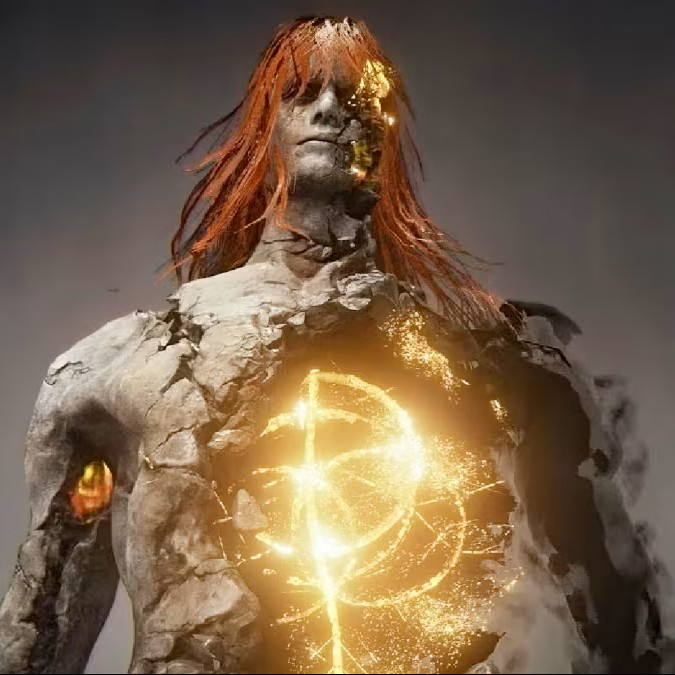

Melina: Una misteriosa joven que aparece ante el Sinluz al comienzo de su viaje.

Ranni la Bruja: Una semidiosa de apariencia etérea que abandonó su cuerpo mortal.

Radagon de la Luna Dorada: Esposo de la Reina Marika.

Radahn: Semidios y general legendario de las Tierras Intermedias.